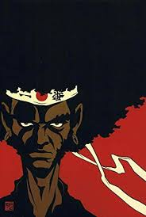

The paragraph will have topics like the things people do for anime. It’s pretty much a craze now so everyone’s probably heard of it. There will be sentences talking about the depth of anime. The origins will be included, then the future works. I will write about the future of anime and how black people are apart of that aspect.
My paragraph will begin with an African American female that shows her interest in anime through her accomplishments. I’ll put in the strive for black people who love anime that their efforts will open a path for non- Japanese to make incredible anime series. The great genres of anime need better representation of black people especially during this generation. The world is big, but became smaller in a way due to technology so stereotypes shouldn’t be prominent or at least there should be more representation. I know there’s some japanese people that know black people to an extent.
Black people are innovative and great to say the least, anime with elements of black culture is a future awaiting. It’ll be fresh and it’s not partially inconceivable. The animes Afro Samurai and Samurai Champloo are prominent examples. It won’t stop there because black people are well on their way negotiating and even creating their own anime. Something this spectacular is long overdue like specifically through a little over a decade. No time for procrastination, an anime like that is in the works!